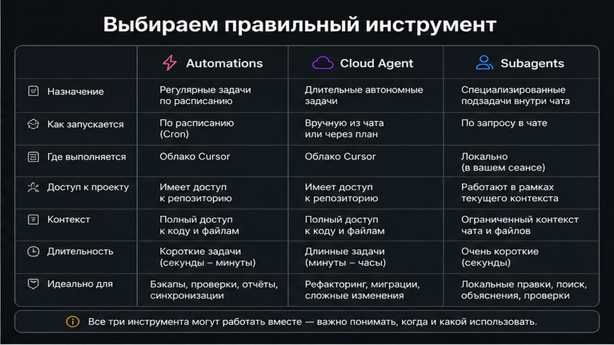
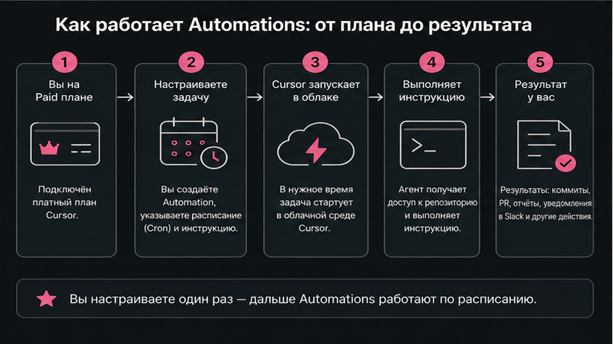
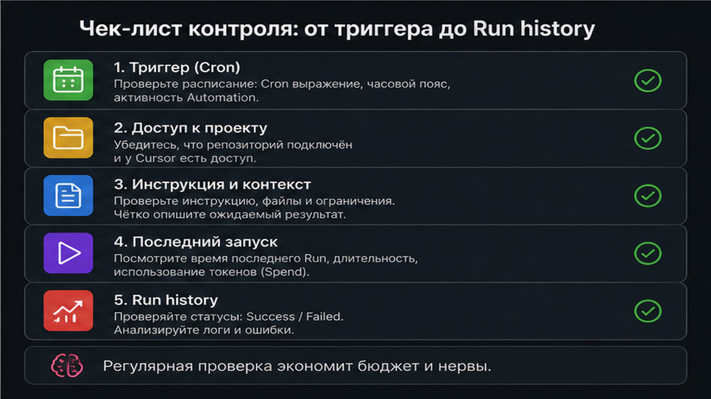

Cursor Automations запускают cloud-агента без вашего участия: PR в GitHub, сообщение в Slack или cron сами поднимают sandbox с инструкциями и tools. Настройка cursor automations путается с ручным Cloud Agent из IDE и съедает бюджет на широких триггерах. За 30–45 минут вы создадите первую automation, выберете узкий trigger, repo scope и MCP, проверите run в history и поставите spend limit.
TL;DR / Быстрый инсайт: Cursor Automations – always-on cloud agents по событию (расписание, GitHub, Slack, webhook), а не чат в редакторе. Создание: Agents Window или cursor.com/automations → trigger → instructions-SOP → tools/MCP → repo scope → save → test в Run history. Начинайте с одного узкого триггера и Private scope; billing – API pricing модели за каждый run. Для MCP сначала настройте серверы по гайду MCP в Cursor.
Automations вышли 5 марта 2026: агент просыпается от триггера, поднимает sandbox и выполняет регламент. Cloud Agent вы запускаете из IDE; subagents – помощники внутри одной сессии. Ниже – чек-лист без путаницы и слива usage.

Триггер – будильник: Slack, GitHub или cron будят агента. Instructions – SOP (стандартная процедура): что проверять и куда писать результат. Tools – разрешённые действия: Comment on PR, Send to Slack, MCP server.
| Критерий | Cursor Automations | Cloud Agent (Background) | Subagents |
|---|---|---|---|
| Кто запускает | Триггер: schedule, GitHub, Slack, webhook | Вы из IDE или cursor.com/agents | Родительский agent в одной задаче |
| Когда использовать | PR review, weekly digest, реакция на инцидент | Разовая фича, исследование, ручной fix | Разбить сложный prompt на подзадачи |
| Память между runs | Да, memory tool учится на прошлых прогонах | Новая сессия при каждом старте | Только в рамках одного run |
| Нужен paid plan | Да | Да, Max Mode всегда включён | Зависит от родительской сессии |
| Billing | API pricing модели за каждый run | То же + spend limit при первом использовании | Внутри одного Cloud Agent run |
Делайте: Automations для повторяющихся событий с чётким SOP. Не делайте: дублировать ту же задачу ручным Cloud Agent каждый понедельник – это дороже и не масштабируется.

Нужен paid Cursor plan. В dashboard cloud-agents (cursor.com/dashboard/cloud-agents) задайте spend limit и secrets – не в prompt. Для PR review подключите GitHub/GitLab read-write; setup в docs – менее 10 минут.
Делайте: лимит до экспериментов. Не делайте: триггер "every push to main" на busy monorepo без теста – usage сгорит за день.

Входы: Marketplace-шаблон, Blank в cursor.com/automations/new или skill /automate (3.8+): опишите задачу, Cursor предложит triggers и tools. Канон – UI в Agents Window; YAML-only без help не считайте единственным путём.
Workflow создания:
Выбор шаблона или Blank → trigger (один узкий) → instructions-SOP → tools (Comment PR, Slack, MCP) → repo scope → visibility Private → Save → test run → Run history
Делайте: первый прогон на шаблоне PR review или no-repo Slack digest. Не делайте: ten triggers в первый день – сначала стабильность одного события.
Несколько triggers на одну automation – срабатывает любой. С 3.8: Slack emoji и новые GitHub-события (review comment, workflow completed и др.).
| Trigger | Когда срабатывает | Типичный кейс |
|---|---|---|
| Scheduled (cron) | По расписанию | Weekly digest, health-check репо |
| GitHub PR / push / CI | PR opened, push, workflow completed | Авто-review, запрос reviewers |
| Slack message / emoji | Сообщение в канале или реакция | Эскалация, ручной старт SOP |
| Linear / PagerDuty | Issue, cycle, инцидент | On-call digest, triage |
| Webhook | POST на URL automation | CI, мониторинг, внешние системы |
Делайте: cursor automation github на одно событие (например PR opened) или cron раз в неделю. Не делайте: webhook без ротации ключа при переводе automation в Team Owned.
No-repo – без кода (Slack, MCP, webhook); PR и правки недоступны. Single-repo – review одного репо. Multi-repo (3.5+) – несколько баз в одном environment. Cron без кода: repo только если нужны PR.
Делайте: no-repo для бизнес-MCP (аналитика, FAQ digest из Marketplace). Не делайте: подключать GitHub read-write, если достаточно Send to Slack и MCP без правок кода.
MCP – "розетки" для сервисов: agent вызывает tool, не пароль в prompt. Включите MCP server и secrets из dashboard; база – гайд cursor mcp. Scope: Private → Team Visible → Team Owned (admin). При promote – rotate webhook key и MCP OAuth на team account. Memories осторожно с untrusted Slack/webhook; на prod держите human-in-the-loop на выходе.
Делайте: минимальный набор tools (Comment on PR + один MCP). Не делайте: копировать secrets в instructions или коммитить их в репозиторий.
Run history: 3–7 дней оценки, затем сужайте или расширяйте triggers. Billing – API pricing модели за run. Скидка 50% первые 7 дней после создания была в 3.5 (май 2026) – сверяйте changelog на дату чтения.
Делайте: human-in-the-loop на merge. Не делайте: auto-merge PR без review на старте. Код – Automations; CRM и воронки – Make: курс Make.com.
Вопросы по связке Cursor Automations + бизнес-процессы – в Telegram @maya_pro.
Материал проверен: эксперт Артур Хорошев (CEO Maya AI, практик Cursor, MCP и Make.com).
Достоверность данных: факты сверены с help Cursor и changelog 03-05, 05-20, 06-18-2026. LSI – SERP и смежный "cursor mcp" (630/мес, B03, июнь 2026).
Always-on cloud agents, которые стартуют по триггеру (расписание, GitHub, Slack, webhook, Linear, PagerDuty), а не когда вы открыли чат в IDE. Agent поднимает sandbox, выполняет instructions и использует настроенные tools и MCP.
Создайте automation → trigger Scheduled (cron) → укажите repo scope, если нужен код → напишите instructions → save → дождитесь первого run в Run history и проверьте output.
Cloud Agent вы инициируете из IDE или dashboard; Automation инициирует внешнее событие. У Automations есть memory между runs и параллельные прогоны по разным триггерам; subagents работают только внутри одной родительской задачи.
Нет для no-repo сценариев (Slack digest, MCP, webhook). Да для PR review, комментариев к коду и изменений в git – выберите single-repo или multi-repo environment.
Сохраните automation → скопируйте URL и API key из настроек → отправьте POST из CI или мониторинга с нужным телом. При смене на Team Owned перегенерируйте ключ.
Каждый run = Cloud Agent run по API pricing выбранной модели. Следите за частотой cron и шириной GitHub-триггеров; spend limit задаётся в cloud-agents dashboard.
В шаге tools включите MCP server, secrets добавьте в cursor.com/dashboard/cloud-agents. Базовая настройка mcp.json и OAuth – в инструкции по MCP в Cursor.